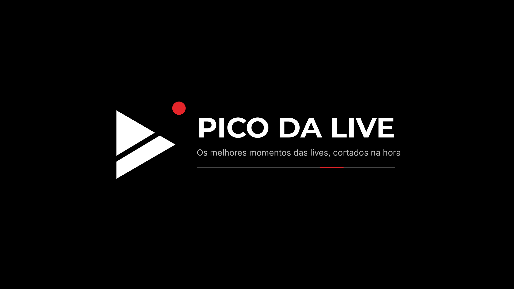

Pico da Live Clipbot
Política de Privacidade e Termos de Uso
Privacy Policy and Terms of Service. English version below.
Índice / Contents
1
Sobre o app
Pico da Live Clipbot é uma ferramenta de uso pessoal do criador do canal Pico da Live. Ela acompanha transmissões ao vivo públicas na Twitch e na Kick, identifica os momentos de maior destaque, gera cortes curtos em formato vertical com legenda e os publica exclusivamente nas contas oficiais do próprio Pico da Live:
- YouTube (@picodalivebr)
- Instagram (@picodalivebr)
- Página do Facebook "Pico da Live"
- TikTok (@picodalivebr)
O app não é oferecido ao público e não permite que terceiros façam login.
2
Política de Privacidade
Dados que acessamos
Apenas os dados das contas do próprio Pico da Live autorizadas via login oficial (OAuth) do Google/YouTube, Meta (Instagram e Facebook) e TikTok: identificador da conta, nome de exibição e permissão para publicar vídeos.
Também usamos conteúdo público de transmissões ao vivo (vídeo, áudio e chat público) para gerar os cortes.
Dados que não coletamos
- Não coletamos dados pessoais de espectadores, seguidores ou outros usuários.
- Não usamos cookies, rastreadores ou publicidade.
- Não vendemos nem compartilhamos dados com terceiros.
Como usamos
Somente para gerar e publicar os cortes nas contas do Pico da Live e conferir o status das publicações.
Armazenamento e segurança
Os tokens de acesso ficam salvos apenas no computador do operador, protegidos, e nunca são publicados. Os arquivos de vídeo temporários são apagados após a publicação.
Retenção
Tokens são mantidos enquanto a autorização estiver ativa e apagados quando revogada.
Revogar acesso
O titular pode revogar a qualquer momento nas configurações de segurança do Google, da Meta (Integrações comerciais) ou do TikTok (Gerenciar apps).
Direitos (LGPD)
Acesso, correção e exclusão de dados podem ser pedidos pelo e-mail de contato. Respondemos em até 15 dias.
Conteúdo de terceiros e remoção
Os cortes usam trechos de transmissões públicas com crédito ao streamer. Streamers ou titulares de direitos que quiserem a remoção de um corte podem escrever para o e-mail de contato; removemos em até 72 horas.
3
Termos de Uso
- O app é de uso exclusivo do operador do Pico da Live e é fornecido "como está", sem garantias.
- O uso respeita os termos e diretrizes do YouTube, Meta (Instagram/Facebook), TikTok, Twitch e Kick.
- Os direitos dos conteúdos originais pertencem aos respectivos streamers; os cortes trazem crédito ao criador e são removidos mediante solicitação.
- É proibido usar o app para spam, conteúdo enganoso ou que viole direitos de terceiros.
- Estes termos podem ser atualizados; a data de atualização fica no topo da página.
- Lei aplicável: Brasil.
4
Exclusão de dados
Para excluir qualquer dado relacionado ao app, envie um e-mail para kaueoautorun@gmail.com com o assunto "Exclusão de dados" e a conta envolvida.
Excluímos tokens e registros em até 15 dias e confirmamos por e-mail.
Também é possível remover o app diretamente nas configurações da plataforma (Google, Meta ou TikTok).
5
Contato
E-mail: kaueoautorun@gmail.com
English version · 1
About the app
Pico da Live Clipbot is a personal-use tool of the creator of the Pico da Live channel. It follows public live streams on Twitch and Kick, identifies the top highlight moments, generates short vertical clips with captions, and publishes them exclusively to Pico da Live's own official accounts:
- YouTube (@picodalivebr)
- Instagram (@picodalivebr)
- Facebook Page "Pico da Live"
- TikTok (@picodalivebr)
The app is not offered to the public and does not allow third parties to log in.
2
Privacy Policy
Data we access
Only data from Pico da Live's own accounts, authorized through the official login (OAuth) of Google/YouTube, Meta (Instagram and Facebook) and TikTok: account identifier, display name and permission to publish videos.
We also use public live stream content (video, audio and public chat) to generate the clips.
Data we do not collect
- We do not collect personal data of viewers, followers or other users.
- We do not use cookies, trackers or advertising.
- We do not sell or share data with third parties.
How we use it
Only to generate and publish clips to Pico da Live's accounts and to check the status of those posts.
Storage and security
Access tokens are stored only on the operator's computer, protected, and are never published. Temporary video files are deleted after publishing.
Retention
Tokens are kept while the authorization is active and deleted when it is revoked.
Revoking access
The account holder can revoke access at any time in the security settings of Google, Meta (Business Integrations) or TikTok (Manage apps).
Your rights (LGPD)
Under the LGPD (Brazil's General Data Protection Law), access, correction and deletion of data can be requested by email at the contact address. We reply within 15 days.
Third-party content and removal
Clips use excerpts of public streams with credit to the streamer. Streamers or rights holders who want a clip removed can write to the contact email; we remove it within 72 hours.
3
Terms of Service
- The app is for the exclusive use of the Pico da Live operator and is provided "as is", without warranties.
- Its use complies with the terms and guidelines of YouTube, Meta (Instagram/Facebook), TikTok, Twitch and Kick.
- Rights to the original content belong to the respective streamers; clips credit the creator and are removed on request.
- Using the app for spam, misleading content or content that violates third-party rights is prohibited.
- These terms may be updated; the update date is shown at the top of the page.
- Governing law: Brazil.
4
Data Deletion
To delete any data related to the app, email kaueoautorun@gmail.com with the subject "Data deletion" and the account involved.
We delete tokens and records within 15 days and confirm by email.
You can also remove the app directly in the platform's settings (Google, Meta or TikTok).
5
Contact
Email: kaueoautorun@gmail.com